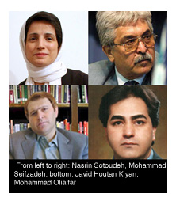

پذيرش > اخبار > کانون وکلای مرکز به دلیل فقدان استقلال در برابر آزار و محاکمه وکلا سکوت می (...)


 کانون وکلای مرکز به دلیل فقدان استقلال در برابر آزار و محاکمه وکلا سکوت می کند کانون وکلای مرکز به دلیل فقدان استقلال در برابر آزار و محاکمه وکلا سکوت می کند
3 شهریور 1390 - - نسخه قابل چاپ
کمپین بین المللی حقوق بشر: حرفه وکالت زیر تازیانه و فشار قوه قضاییه ایران
کمپین بین المللی حقوق بشردر ایران امروزبا انتشار بیانیه ای گفت که کانون وکلای مرکز ایران باید به حمایت از وکلایی که به دلیل دفاع از زندانیان عقیدتی یا دفاع از اهداف وضوابط حقوق بشر در مخمصه قرار گرفته، آزار و اذیت شده و با اتهامات حقوقی وحتی احکام زندان مواجه شده اند بشتابد. کمپین همچنین تصریح کرده که کانون بین المللی وکلا و گزارشگر ویژۀ سازمان ملل متحد در حوزه استقلال قضات و وکلا، باید در مورد وضعیت وکلای ایرانی که با اینگونه فشارها روبرو هستند وارد عمل شده و از آنان دفاع کند.
دکتر شیرین عبادی، وکیل حقوق بشر برجستۀ ایرانی و برندۀ جایزۀ صلح نوبل، لیستی از ۴۲ وکیل که از خرداد ماه سال ۱۳۸۸ تا کنون به دلیل دفاع از زندانیان سیاسی- عقیدتی و یا دفاع از اهداف و ضوابط حقوق بشر مورد آزار واذیت قرار گرفته، تهدید، بازداشت، محاکمه و محکوم به زندان شده اند را گردآوری کرده و برای انتشار در اختیار کمپین قرار داده است. مروری بر آنچه وکلای یاد شده متحمل شده اند نشان می دهد که علیرغم حملات گسترده دستگاه قضایی و اطلاعاتی کشور علیه وکلای مدافع، کانون وکلای مرکز- که بسیاری از وکلای یاد شده در این استان ساکن هستند- را به عهده دارد، تاکنون هیچ اقدامی برای دفاع از اعضاء خویش انجام نداده است.
دکتر عبادی در این زمینه به کمپین گفت: “هر شغلی یک نهاد صنفی برای حمایت از اعضایش دارد. به عنوان مثال، وقتی یک بازیگر سینما را بازداشت می کنند اتحادیه سینمایی با موضع گیری در برابر آن اطلاعیه صادر و به بازداشت مزبور اعتراض می کند، یا وقتی خبرنگار یا نویسنده ای دستگیر می شود انجمن صنفی مرتبط به آن اعتراض می کند. ولی چگونه است که طی دو سال اخیر چنین شمار پرتعدادی از وکلا به دلیل حرفه شان با مشکل مواجه می شوند و هیچ نهادی از آنها حمایت نمی کند؟”
وی افزود: ” سوال این است که پس فایده کانون وکلا چیست؟! درحالیکه یکی از وظایف اصلی کانون نظارت بر عملکرد وکلا و حمایت قانونی آنها است. وکلا بی پناه تر از هر گروه دیگر در جامعه ایران هستند.”
کوتاهی کانون وکلا در اعتراض به نحوه رفتار دستگاه های امنیتی و قضایی و آزار واذیت هایی که نسبت به اعضاء آن صورت می گیرد رابطه مستقیمی با مستقل نبودن این کانون دارد که توانایی آن را در پاسخگو نگهداشتن نهادهای موجود سلب کرده است. بعد از انقلاب سال ۱۳۵۷، مقامات ایرانی فعالیتهای کانون وکلا را به مدت ۱۸ سال معلق کردند و یک نمایندۀ قوۀ قضاییه سالها مسئولیت ادارۀ آن را به عهده داشت.
شیرین عبادی در خصوص شرایطی که به وضعیت کنونی کانون وکلا منجر شده است گفت: ” دستور بازگشایی کانون بعد از پاکسازی بسیاری از وکلا صورت گرفت. بعد از آن قانون کیفیت اخذ پروانه وکالت دادگستری را تصویب کردند که به موجب آن عملا استقلال از کانون گرفته شد.”
قانون کیفیت اخذ پروانه وکالت دادگستری، که در سال ۱۳۷۶ تصویب شد، به قوۀ قضاییه اختیار می دهد تا صلاحیت نامزدهای عضویت در هیئت مدیرۀ کانون وکلا را بررسی کند.
طبق این قانون در حالیکه وکلای دادگستری ظاهرا هر دوسال یک بار برای انتخاب اعضاء هیات مدیره کانون رای میدهند، دادگاه انتظامی قضات می تواند هر نامزدی را که نامناسب بداند رد صلاحیت کند. مطابق تبصرۀ ۱ مادۀ ۴ این قانون:
“مرجع رسیدگی به صلاحیت نامزدها، دادگاه عالی انتظامی قضات بوده که مکلف است ظرف حداکثر دو ماه ضمن استعلام سوابق ازمراجع ذیربط، صلاحیت آنان را بررسی و اعلام نظر کند و مراجع ذیصلاح قانونی که از نامزدها، سوابق یا اطلاعاتی دارند در صورت استعلام موظف بهاعلام آن میباشند.”
دادگاه انتظامی قضات بارها مانع نامزدی و عضویت وکلای حقوق بشر مانند شیرین عبادی، عبدالفتاح سلطانی، محمد سیف زاده، فریده غیرت، نعمت احمدی وشماری دیگر از وکلا در هیئت مدیرۀ کانون شده است.
درعمل، قوۀ قضاییۀ ایران تصمیم گیری در خصوص صلاحیت اعضاء هیئت مدیرۀ کانون وکلای دادگستری را به وزارت اطلاعات ایران، که از آن به “مرجع ذیصلاح قانونی” نام می برد، واگذار کرده است. وزارت اطلاعات که حیطۀ قدرتش بر قوۀ قضاییۀ ایران از خرداد سال ۱۳۸۸ تا کنون به نحو چشمگیری افزایش یافته، سابقه ای بسیار طولانی در مورد هدف قرار دادن منتقدان حکومت و فعالان اجتماعی- سیاسی داشته است.
به نوشته وبسایت اتحادیۀ کانون وکلای ایران، که سازمانهای متعددی از جمله کانون وکلای دادگستری مرکز را تحت پوشش قرار میدهد، اکثر اعضاء کانون به کنترل قوۀ قضاییه روی اعضاء هیئت مدیرۀ کانون اعتراض دارند. با این وجود، کنترل قوۀ قضاییه و همچنین کنترل وزارت اطلاعات بر کانون از طریق قوۀ قضاییه، باعث شده که هیئت مدیرۀ کانون و کانون وکلای دادگستری مرکز دچار انفعال شوند و کانون قادر به دفاع وحمایت از وکلایی که به اشکال مختلف حقوقشان توسط حکومت نقض می شود نباشد.
تمامی حقوقدانان و وکلایی که نام آنها در لیست ضمیمه به چشم می خورد، بدلیل دفاع از زندانیان عقیدتی –سیاسی و تلاش برای احیا حقوق آنان و احترام به اصول حقوق بشر و حاکمیت قانون مورد هدف قرار گرفته اند. قوۀ قضاییۀ ایران۱۱ تن از این افراد را به حبس هایی که بعضا تا ۱۱ سال بوده محکوم کرده است.
سخنگوی کمپین، هادی قائمی با اشاره به شرایطی که قوه قضاییه برای وکلای حقوق بشر ایجاد کرده است گفت: ” در واقع قوۀ قضائیۀ ایران ارائه هر نوع خدمات حقوقی مرتبط به حقوق بشر را جرم می داند.” وی افزود: “نظام قضایی ایران همچنان به حمله و حذف کلیۀ افرادی که مایل به ارائۀ خدمات حقوقی به زندانیان عقیدتی بوده اند ادامه می دهد. هدف این است که از طریق ارعاب، وکلای مدافع ایرانی را از قبول چنین پرونده هایی منصرف نمایند.”
در تاریخ ۱۹ دی۱۳۸۹، نسرین ستوده که وکالت بسیاری از فعالان و زندانیان سیاسی را به عهده دارد، به اتهام “اقدام علیه امنیت ملی” و “تبلیغ علیه نظام” به ۱۱ سال زندان و ۲۰ سال محرومیت از حرفۀ وکالت و سفر به خارج محکوم شد. وی همچنین به پانصد هزار ریال جریمۀ نقدی برای عدم رعایت حجاب در یک سخنرانی ضبط شده محکوم شد. ستوده، که مادر دو فرزند خردسال است، به دفعات دست به اعتصاب غذا زده است تا به بازداشت غیر قانونی و بدرفتاری های صورت گرفته در زندان اعتراض نماید.
در تاریخ ۱۹ اردیبهشت ۱۳۹۰ ، شعبۀ ۵۴ دادگاه تجدید نظر تهران محمد سیف زاده، یکی از اعضای موسس کانون مدافعان حقوق بشر ایران که وکالت بسیاری از بازداشت شدگان پس از انتخابات را به عهده داشت را به دو سال حبس در زندان و ده سال محرومیت از حرفۀ حقوق به اتهام “اقدام علیه امنیت ملی از طریق تاسیس کانون مدافعان حقوق بشر ایران” محکوم کرد.
محمد اولیایی فرد، عضو کمیتۀ دفاع از زندانیان سیاسی در ایران، با تحمل یک سال محکومیت خویش در زندان فقط به دلیل انجام مصاحبه با خبرگزاری های بین المللی در خصوص پروندۀ یکی از موکلانش، یک نوجوان که به اعدام محکوم شده بود، در ۲۹ فروردین ماه سال جاری آزاد شد.
جاوید هوتن کیان که وکالت سکینه آشتیانی، زنی که به اتهام زنا به سنگسار محکوم شده بود را به عهده داشت، در تاریخ ۱۸ مهر ۱۳۸۹ دستگیر شد. وی بعدا پس از ارائۀ اعترافات تلویزیونی که به نظر می آمد تحت فشار از وی اخذ شده باشد، به۱۱ سال زندان به اتهام “اقدام علیه امنیت ملی” محکوم شد.
در خرداد ماه سال جاری، کانون وکلای بین المللی(آی. بی. اِ.) که کانون وکلای ایران عضو آن است، خواهان آزادی جاوید هوتن کیان شد(لینک). همچنین دوسال قبل، در تیر ۱۳۸۸، کانون وکلای بین المللی طی بیانیه ای ابراز نگرانی کرده بود که در واقع “کانون های وکلا در ایران تحت کنترل قوۀ قضاییه قرار گرفته اند.(لینک) مارتین سولک، رییس انستیتوی حقوق بشر کانون وکلای بین المللی گفت که ایران ناقض “اصول اولیۀ سازمان ملل متحد در خصوص نقش وکلا، از طریق عدم توجه اساسی به نیاز مبرم به حرفۀ وکالت مستقل و از طریق تحت کنترل گرفتن وکلای ایران توسط قوۀ قضاییه” است.
کنترل قوۀ قضائیه روی کانون وکلا همچنین ناقض تعهدات حقوقی ایران درخصوص احترام به حق عضویت در انجمنها که توسط مادۀ ۲۱ میثاق بین المللی حقوق مدنی و سیاسی تضمین شده است، می باشد.
هادی قائمی گفت: “کانون وکلای دادگستری مرکز به نحو اسفباری در خصوص به زندان انداختن همکارانش توسط قوۀ قضاییه فقط به دلیل اعتقاد آنها به اجرای ضوابط حقوق بشر یا دفاع از موکلانش ساکت بوده است.” وی افزود: “وقت آن رسیده که کانون وکلا خود را از کنترل و نفوذ قوه قضاییه برهاند و به یاری اعضاء خویش بشتابد. همچنین، کانون بین المللی وکلا و گزارشگر ویژه در حوزه استقلال قضات و وکلا باید از کانون وکلای ایران حمایت و در مقولۀ حمله به وکلای ایران وارد عمل شده واقدامات مقتضی را انجام دهد.”
رونوشت:
- کانون بین المللی وکلا
 گزارشگرویژه در حوزه استقلال قضات و وکلا گزارشگرویژه در حوزه استقلال قضات و وکلا
کمیسیاری عالی حقوق بشر
- کانون وکلا
-اتحادیه کانون وکلا
-گزارشگر ویژه حقوق بشر جهت اطلاع
-دفتر خانم پیلای
ارسال به
بالاترین
،
توییتر
،
فریندفید
،
فیسبوک
در همين بخش :
 پروین ذبیحی برنده جایزه حقوق بشری سازمان غيردولتى اتريشى سودويند شد پروین ذبیحی برنده جایزه حقوق بشری سازمان غيردولتى اتريشى سودويند شد
پخش کارت پستال و بروشور در روز جهانی زن در تهران
تمدید زمان برای امضای بیانیهی جمعی از فعالان زن به مناسبت هشت مارس
مجوزی که در نطفه خفه شد
بیش از 2000 امضا در اعتراض به تبعیض های آموزشی به مجلس تحویل داده شد
ديگر بخش ها :
طرح یک میلیون امضا
|
مقالات
|
سایت نوشته ها
|
اخبار
|
گزارش كمپين
|
گفت و گو
|
علیه سکوت
|
كوچه به كوچه
|
نامه های شما
|
گزارش ویژه
|
گفتگو با اعضا
|
ویژه سالگرد کمپین
|
تصویر برابری
|
دل آرام علی
|
تریبون
|
مقالات
|
تاریخ شفاهی
|
خارج از چارچوب
|
کتابخانه
|
درباره کمپین
|
کمپین در شهرها
|
کمپین در بند
|
صدای تغییر
|
ویژه 22 خرداد
|
لایحه حمایت از خانواده
|
گالری
|
عشا مومنی
|
امیر یعقوبعلی
|
خدیجه مقدم
|
راحله عسگری زاده و نسیم خسروی
|
پروین اردلان،جلوه جواهری، مریم حسین خواه، ناهید کشاورز
|
زینب پیغمبرزاده
|
سعیده امین، سارا ایمانیان، محبوبه حسین زاده، ناهید کشاورز و همایون نامی
|
احترام شادفر
|
نسیم سرابندی زاده،فاطمه دهدشتی
|
وبلاگ مهمان
|
پرونده خرم آباد
|
دستگیری ها
|
مریم مالک
|
پرستو اللهیاری
|
مهرنوش اعتمادی
|
سمیه رشیدی
|
Other Languages
|
همراهان
|
«فراخوان کمپین ده روز با بهاره هدایت»
| English
|